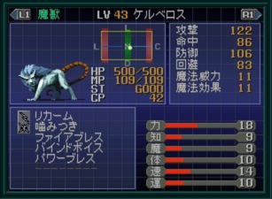
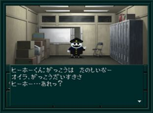
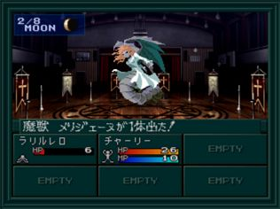
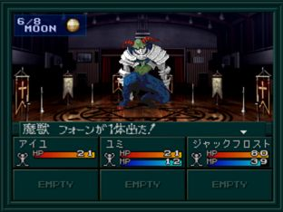
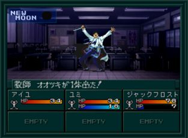

- 파트너 결정
- 학교에서 얻을 수 있는 아이템
- 암 터미널 입수
- 데이터 디스크 입수
- 케르베로스 출현
- 히호군 출현
- 체육관
- BOSS:마수 메리제누
- BOSS:마수 폰
- 마계의 구멍
- 과학실
- BOSS:교사 오오츠키
- 학교에 사교의 관 출현
- 오만계로 가자
파트너 결정
- 파트너를 선택하면 진행 분기, 스토리와 엔딩이 변화
- 파트너는 한명만 선택 가능
- 파트너를 선택하는 회화에서 거절해도 다시 찾아가서 말을 걸면 된다.
- 유미 이외의 파트너를 선택하려면 유미의 권유를 거절하면 된다.
| 파트너 |
조건 |
유미
ユミ |
2F 2-D 교실 앞에서 유미의 권유를 받아들인다. |
찰리
チャーリー |
3F 2-E 교실에서 찰리의 권유를 받아들인다. |
레이코
レイコ |
유미의 권유를 거절
3F 2-H 교실에서 야와타 선생님(八幡先生)과 회화
3F 2-E 교실에서 찰리의 권유를 거절
1F 류이치(龍一)와 아키코(暁子)와 말하고 무기를 입수
1F 클럽 룸의 방에서 부원들과 말하고 무기, 방어구를 입수
1F 양호실에서 카야마 선생님(香山先生)과 대화
1F 음악실에서 레이코와 2회 이야기를 하고 권유를 받는다. |
아키라
アキラ |
은폐 루트에서 선택할 수 있는 파트너. 자세한 것은 유폐의 탑을 참고 |
파트너로 들어오면 랜덤으로 4종류의 파라미터를 가지게 된다. 종류별 약간씩만 다르고 능력치의 총합은 '24'로 동일하다. 만일 주인공이 남자라면 파트너의 HP가 +5 증가
학교에서 얻을 수 있는 아이템
학교 안을 돌아다니면서 아이템을 입수하자.
| 장소 |
아이템 |
| 1F 서쪽 류이치와 아키코의 방 |
ピッケル |
| 1F 북쪽 양호실 |
傷薬 |
| 1F 동쪽 야구부 |
ヘルメット×２, 金属バット |
| 1F 동쪽 풋볼부 |
ショルダーパット×２ |
| 1F 동쪽 하키부 |
バックパッド×２ |
| 1F 동쪽 스모부 |
ローラーブレード×２ |
암 터미널 입수
3F 2-H 교실의 야와타 선생님(八幡先生)으로부터 암 터미널(アームターミナル)을 받을 수 있다.
암 터미널을 얻으면 오토매핑 기능이 추가된다.
데이터 디스크 입수
2F 북동쪽, 복도 끝에서 동쪽으로 이동하면 데이터 디스크(データディスク)를 주울 수 있다.
전산실 앞에서 유귀 가키와 전투 후 전산실의 사토군에게 디스크를 맡기자.
케르베로스 출현

★ 조건 : 학교에서 암 터미널을 입수한 후 데이터 디스크를 전산부의 사토군에 맡긴 상태로 레벨 21까지 올림
조건을 만족하고 전산부에 가면 케르베로스가 출현한다. 전투에서 이기면 중마가 된다.
만일 첫 출현할 때 놓쳐버리면 1F 서쪽 계단 옆 방에서 만날 수 있다. 참고로 나태계 공략 중에는 사토군이 없기 때문에 출현하지 않는다.
아키라 루트에서도 유폐의 탑에 가기 전에 조건만 만족시키면 가능하다.
히호군 출현

암 터미널을 입수하고 3F 북서의 방에 가면 히호군(ヒーホーくん)과 만날 수 있다.
이 때 히호군의 소원을 들어주면 중마로 할 수 있다. (오만계 클리어전)
중마로 하지 않을 경우 오만계 클리어 후에 스모부에 들어간 히호군을 볼 수 있다.
체육관
1F 남서쪽 복도 끝으로 가면 체육관이 나옵니다. 중간에 복도에서 악마를 만날 수 있다.
주인공의 성별에 따라 보스가 달라진다.
히호군을 중마로 하고 있다면 쉽게 이길 수 있다.
BOSS:마수 메리제누

| 이름 |
Lv9 魔獣メリジェーヌ |
| HP |
34 |
| 마법/특기 |
ドルミナー／マリンカリン／ディア／引っかき |
히호군이 중마로 들어왔다면 브후라로 손쉽게 처리 가능하다.
BOSS:마수 폰

| 이름 |
Lv9 魔獣フォーン |
| HP |
32 |
| 마법/특기 |
ヘルズフィスト／飛び蹴り／パニックボイス |
히호군이 중마로 들어왔다면 브후라로 손쉽게 처리 가능하다.
마계의 구멍
체육관의 보스를 쓰러뜨린 후 체육관에 가면 마계의 구멍으로부터 적이 출현
이 구멍은 레벨10이 되면 더 이상 적이 출현하지 않는다.
과학실
체육관의 이벤트 이후 1F의 과학실로 가면
BOSS:교사 오오츠키와 전투가 있다. 플라즈마 교사의 시작...
BOSS:교사 오오츠키

| 이름 |
Lv11 教師オオツキ |
| HP |
40 |
| 마법/특기 |
ヒールドロップ／ヘルズフィスト／狙い撃ち |
학교에 사교의 관 출현
주인공의 레벨이 10이상으로, 이하의 조건을 채우면 학교의 체육관이 사교의 관이 된다.
필수 조건
- 주인공의 레벨이 10이상
- 체육관의 보스를 넘어뜨린다.
- 풋볼부의 남학생으로부터 체육관이 사교의 관으로 바뀐 것을 듣는다. (나태계 공략 중에는 등장하지 않음)
오만계로 가자
3F 북동쪽의 문으로 나가면 봉인의 문에 들어간다. 중앙의 방에 들어가면 체육관의 보스로부터 얻었던 링을 사용한다.
서쪽의 문으로 오만계에 갈 수 있다.